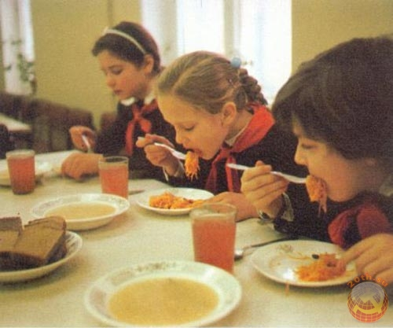

Тісто для млинців(рецепт на соді)
Простий рецепт тіста для
млинців на соді ґрунтується на яйцях, завдяки яким структура млинчика
залишається цілісною. Це дуже важливо для того, щоб спекти
максимально тонкі вироби, що вказує
на майстерність кулінара.
Для приготування потрібні такі інгредієнти:
- 5 яєць;
- 260-280 грам пшеничного борошна;
- 2 ст. л. олії без запаху (в тісто);
- щіпка солі;
- 600 мл теплої води (не більше 40°С);
- 1 ч. л. соди;
- 1/4 ч. л. лимонної кислоти;
-
1-3 ст. ложки цукрового піску
-
якщо млинці плануються з солоним наповнювачем – порцію цукру
знизити,
- для солодкого – можна підвищити)
-
якщо млинці плануються з солоним наповнювачем – порцію цукру
знизити,

Меню рядянської їдальні:
- Постний борщ
- товчена картопля на воді з "хлібною" котлетою
- салат із вареного буряку або солоних огірків з олією
- компот із сухофруктів
- пиріжок з горохом